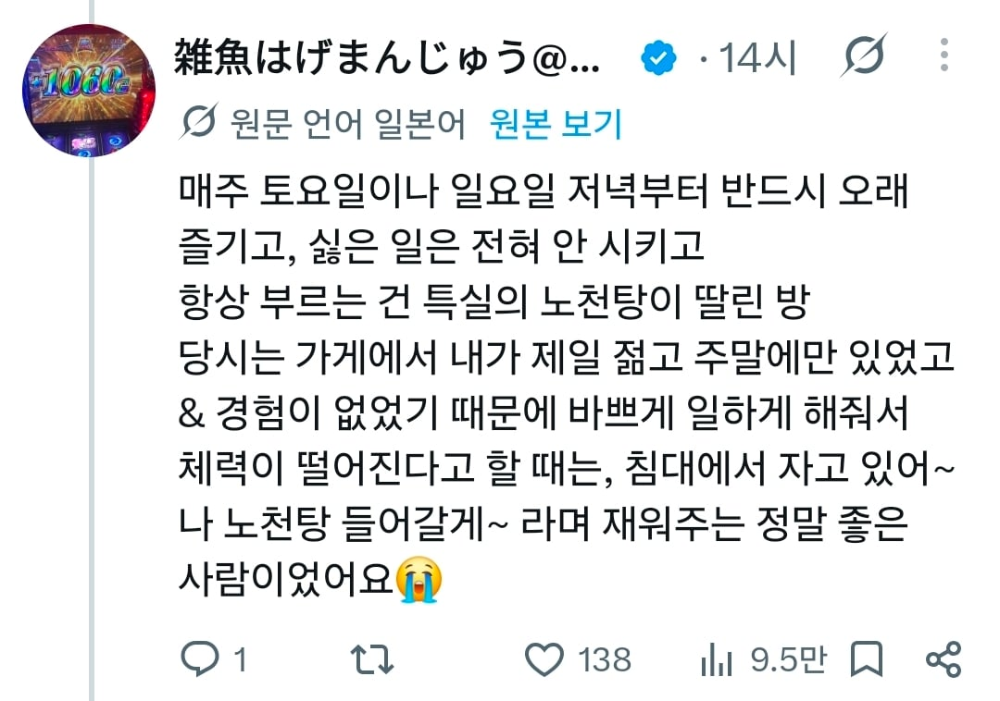

단골 손님의 사망

단골 손님의 사망
최악의 손님은 새벽 2시에 불러서 이삿짐 싸는놈이였어요.....
챙녀를 불러놓고 이삿짐에 싼다구요?
ㅇㅇ 새벽에 급하게 사람 부를수있는 가장 좋은 방법이라서
오
하나만 물어보겠습니다...
그 이삿짐... 처녀인가요?
이삿짐<<단어 자체가 너무 빗치스럽지 않냐?
이사짐비용 생각하면 나름 싼편이랬낰ㅋㅋㅋㅋㅋ
손녀보는 기분이네라는 멘트는 좀...
사람 사는 정이지 일본 여행 좋아서 가는 사람들은 다 이해할걸?
일본여행 좋아하는데 난 이해 못하겠음...
아니아니아니; 난 일본에서 거주 경험및 일본여자친구도 있지만 전혀 이해 안되는데..
뭔 개소리야 씨발
???
ㄹㅇ
일본 풍속은 진짜 존나 비싸서.. 저런 썰 보면 돈이 얼마나 많길래 조러지 이런생각..
일본인 나오는 중급 소프만 해도 한시간이 3~5만엔 사이인데 180분을 저렇게 조지니..
다 늙은 할배라 연금생활 하면서 특별히 사는거 없으면 남는돈 쓰시는거 아닐까
지역따라 옵션따라 다르고 외국인 할증 붙으면 너무 비싸서 그럴수도 있지 않나, 언젠가 이삿짐센터보다 데리헤루가 저렴해서 일 시켰다는 썰 본거 같은데
손녀보는기분이네 진짜 더럽다
번역이 ㅅㅂ 좀
손녀를 어떻게 봤길래 손녀보는 기분이 나는데 ㅋㅋㅋ
"손녀같아서 만졌다"
한무더기의 쓰레기장에 핀 꽃같은 이야기구나
손녀와의 섹스라..
난 저래서 sns가 싫더라 지만 알아야 할 비틀린 감성을 익명에 사연으로 포장에서 똥통에 던지면
구더기들이 우우 몰려서 잔치하는것 같아 직업적 애환을 오염시키지 마라
트위터 파딱? 주작임
평생 스쳐지나갈 일조차 없을법한 세계의 인간군상과 그 세계의 감성이 느껴지고, 공감은 안되더라도 납득은 됨
이런게 문학이라 생각함
근데 ㅈ같은 손님들만 있었을텐데 저런사람있었으면 저 시간만큼은 나름 힐링이였을거임